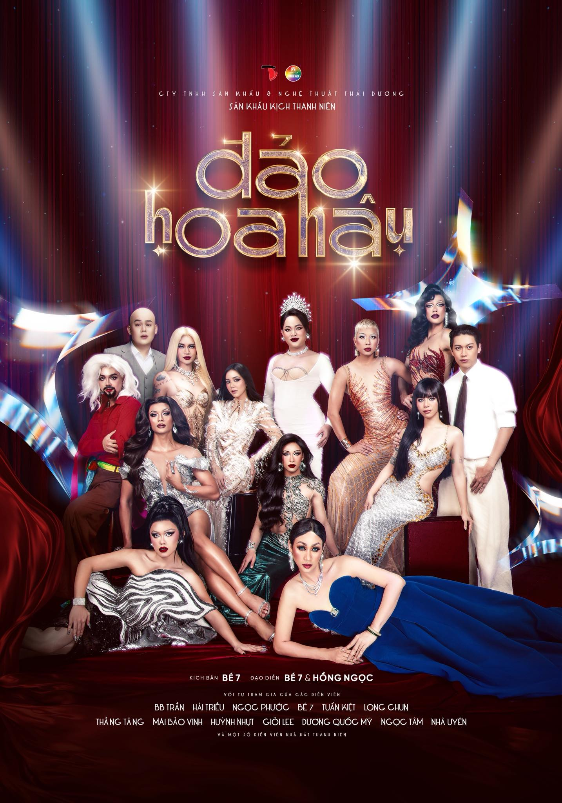
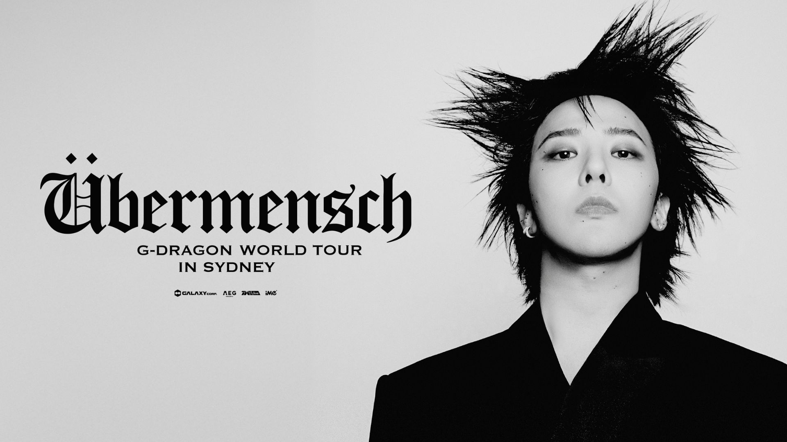
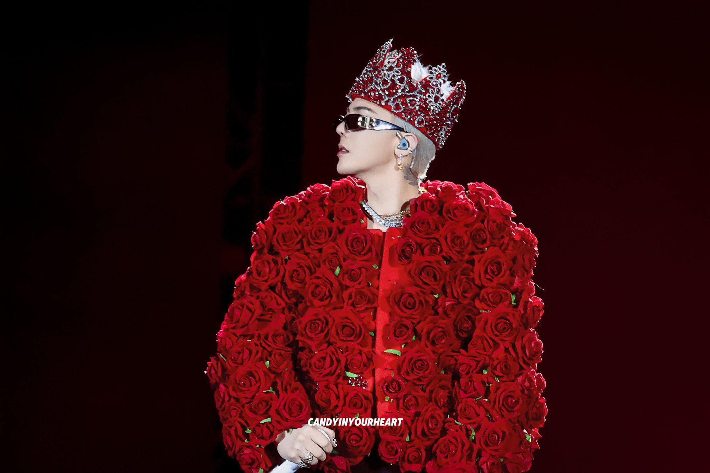
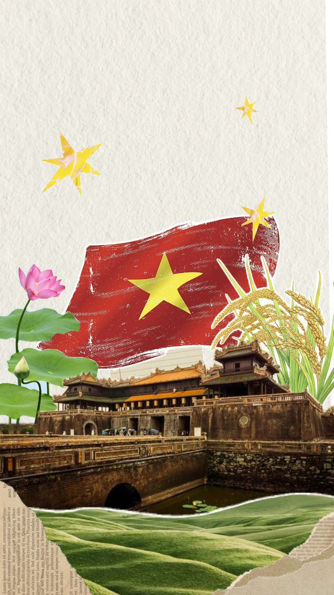

Gì dzậy trời?

Festival Indie Lớn Nhất Mùa Hè 2026 Có Gì Hot?

Tại Sao Gen Z Bắt Đầu Đổ Xô Đi Xem Kịch Nói?

Vì Sao Mr Siro Lại Cháy Vé Trong 10 Phút?


Sau quãng thời gian dài đằng đẵng chờ đợi, BTS chính thức đánh dấu sự trở lại đầy bùng nổ với World Tour mang tên "The Eternal Chapter". Đây không đơn thuần là một chuỗi concert thương mại, mà là một "hành trình tâm hồn" được thiết kế để hàn gắn và kết nối lại hàng triệu trái tim ARMY sau những năm tháng tạm xa cách. Với quy mô dự kiến lên tới 79 đêm diễn tại những sân vận động (Stadium) biểu tượng nhất hành tinh, chuyến lưu diễn này đang được giới chuyên môn khẳng định là siêu concert lớn nhất lịch sử âm nhạc K-pop từ trước đến nay.
 [Toàn cảnh sân vận động Goyang lung linh trong biển Bomb tím]
[Toàn cảnh sân vận động Goyang lung linh trong biển Bomb tím]
Mở màn tại sân vận động Goyang (Hàn Quốc), BTS đã chứng minh vì sao họ vẫn là "nhóm nhạc lớn nhất thế giới". Sân khấu 360 độ hoành tráng không một góc chết đã biến mỗi đêm diễn thành một không gian nghệ thuật đa chiều. Tại đây, tinh thần của The Eternal Chapter được hiện thực hóa qua âm nhạc, ánh sáng và những màn trình diễn kéo dài hơn 150 phút mỗi đêm.
Mọi ánh mắt của ARMY Việt hiện đang đổ dồn về SVĐ Mỹ Đình vào tháng 4 tới. Theo các nguồn tin hành lang, danh sách trình diễn (setlist) sẽ là một bản giao hưởng hoàn hảo giữa những bản hit làm nên tên tuổi như "Blood Sweat & Tears", "Spring Day" và những chương mới đầy sôi động vừa được phát hành.
 [Khoảnh khắc visual của các thành viên trên sân khấu]
[Khoảnh khắc visual của các thành viên trên sân khấu]
Đêm concert mở màn đã đi vào lịch sử khi các chàng trai Bangtan biểu diễn dưới cơn mưa nặng hạt. Thay vì làm giảm đi sức nóng, những giọt mưa rơi trên tóc, trên áo và ánh đèn LED rực rỡ lại vô tình tạo nên một khung cảnh điện ảnh hiếm thấy. Dàn vocal line gồm Jin, Jimin, V và Jungkook đã có những màn khoe giọng "nuốt đĩa" dù điều kiện thời tiết khắc nghiệt, trong khi rap line (RM, Suga, J-Hope) khiến cả vạn người bùng nổ với nhịp điệu dồn dập của "Run BTS" và "Mic Drop".
 [BTS cực cháy dưới mưa]
[BTS cực cháy dưới mưa]
Đặc biệt, màn trình diễn "Body to Body" của V đã thực sự gây bão mạng xã hội với visual "bén như dao cạo". Những thước phim fancam ghi lại khoảnh khắc các thành viên tương tác với khán giả dưới mưa đã chứng minh đẳng cấp của những ngôi sao hàng đầu: không ngại gian khó, chỉ quan tâm đến việc mang lại cảm xúc trọn vẹn nhất cho người hâm mộ.
Dự án "BTS THE CITY" đi kèm với tour diễn đã nâng tầm trải nghiệm concert lên một đẳng cấp mới. Tại mỗi thành phố mà BTS đi qua, từ Seoul cho đến Hà Nội sắp tới, người hâm mộ không chỉ đi xem show rồi về. Cả thành phố sẽ biến thành một "kỳ nghỉ âm nhạc" với các khu vực trưng bày merchandise độc quyền, các khu trải nghiệm stamp rally (thu thập dấu ấn) và không gian nghệ thuật lấy cảm hứng từ âm nhạc của nhóm.
Sự kết hợp giữa 7 biểu tượng toàn cầu này là minh chứng rõ nét nhất cho việc âm nhạc có thể xóa tan mọi khoảng cách. Từ những hàng ghế xa nhất trên khán đài cho đến khu vực VIP sát sân khấu, tất cả đều hòa chung một biển tím rực rỡ, tạo nên một chương lịch sử mới mà chắc chắn nhiều thập kỷ sau, người ta vẫn sẽ nhắc lại với sự ngưỡng mộ và lòng tự hào.
Hãy sẵn sàng, vì hành trình vĩnh cửu này chỉ mới bắt đầu.

19 giờ ngày 29/3/2025, G-Dragon chính thức khởi động chuyến lưu diễn thế giới thứ 3 trong sự nghiệp mang tên Übermensch. Sau 8 năm vắng bóng trên bản đồ lưu diễn cá nhân, "Vị vua" của K-pop đã trở lại với một diện mạo hoàn toàn mới, biến SVĐ Goyang thành một thánh đường âm nhạc rực rỡ sắc màu của kỷ nguyên "Beyond The Flower".
Xuất hiện với mái tóc bạch kim rực rỡ, G-Dragon khiến 41.000 khán giả có mặt tại sân vận động phải choáng ngợp bởi khí chất áp đảo. Không chỉ dừng lại ở âm nhạc, thủ lĩnh BIGBANG còn khẳng định vị thế biểu tượng thời trang khi diện chiếc áo đỏ rực rỡ và đội chiếc vương miện đính hồng ngọc trị giá hàng tỷ đồng.

[Cận cảnh vương miện đính đá quý khẳng định ngôi vương của G-Dragon]Đêm diễn không chỉ là sân khấu cá nhân mà còn là nơi hội ngộ của những biểu tượng. CL đã xuất hiện với tư cách khách mời đặc biệt, cùng G-Dragon tái hiện bản hit "The Leaders" khiến toàn bộ khán đài vỡ òa. Setlist của đêm diễn là sự giao thoa hoàn hảo giữa 8 ca khúc mới trong album vừa ra mắt và những bản hit cũ như Heartbreaker, Who You, Today...
 [Bộ đôi huyền thoại nhà YG]
[Bộ đôi huyền thoại nhà YG]
Giữa biển lightstick hoa cúc mất cánh, người hâm mộ đã thực sự sống lại những giây phút rực rỡ nhất của tuổi trẻ. Khả năng làm chủ sân khấu của G-Dragon vẫn là một "đẳng cấp" khác biệt – khi thì lạnh lùng áp đảo, khi lại ngại ngùng đáng yêu bất chấp tuổi U40.
Chương tiếp theo của Übermensch sẽ sớm đổ bộ các thành phố châu Á. Bạn đã sẵn sàng săn vé?
Sự kiện đề xuất

Ngày 30/4/1975 không chỉ là một dấu mốc vàng son trong lịch sử quân sự của dân tộc Việt Nam, mà còn là một "bản giao hưởng hòa bình" được viết nên bằng sự hy sinh của hàng triệu trái tim yêu nước. Mùa xuân năm ấy, cả non sông nối liền một dải, không còn sự ngăn cách của vĩ tuyến 17. Đó là một chiến thắng của lẽ phải, của khát vọng tự do cháy bỏng, biến khát vọng ấy thành một sự thật đẹp đẽ.
Thời của những vở kịch cổ điển, nặng về giáo điều đã qua rồi. Kịch sống không có diễn lại, từng cảm xúc, từng tiếng cười, từng khoảnh khắc bất ngờ đều xảy ra một lần duy nhất và hoàn toàn chân thực. Bên cạnh đó, mức giá vé chỉ bằng 1/10 concert K-pop nhưng mang lại một buổi tối hẹn hò "sang chảnh" và giàu trải nghiệm.
 [Cột cờ Hà Nội – Biểu tượng vĩnh cửu của độc lập và thống nhất dân tộc]
[Cột cờ Hà Nội – Biểu tượng vĩnh cửu của độc lập và thống nhất dân tộc]
Chữ "Độc lập" đã thực sự được khẳng định khi cả thế giới phải ngỡ ngàng trước ý chí thép của một dân tộc nhỏ bé nhưng gan góc. Sự chân thực đó mới là thứ đáng được ghi lại nhất. Và từ trong chính những giây phút oanh liệt ấy, một nền văn hóa mới được hình thành – nền văn hóa của tự do, nơi cá tính độc lập của mỗi nghệ sĩ được tôn vinh.
And trong chính những giây phút hào hùng đó, một nền văn hóa mới được hình thành – nền văn hóa của tự do, nơi cá tính độc lập của mỗi nghệ sĩ trẻ được tôn vinh, giúp họ dũng cảm dấn thân vào hành trình vĩnh cửu này.
 [Lễ diễu binh kỷ niệm 30/04 tại TP.HCM – Kết nối hào hùng lịch sử với hiện tại]
[Lễ diễu binh kỷ niệm 30/04 tại TP.HCM – Kết nối hào hùng lịch sử với hiện tại]
Hãy cùng chúng mình "trở về ký ức hào hùng", vì hành trình này là sự giao thoa mạnh mẽ giữa nghệ thuật biểu diễn và ý thức bảo tồn di sản!
Sự kiện tiêu điểm